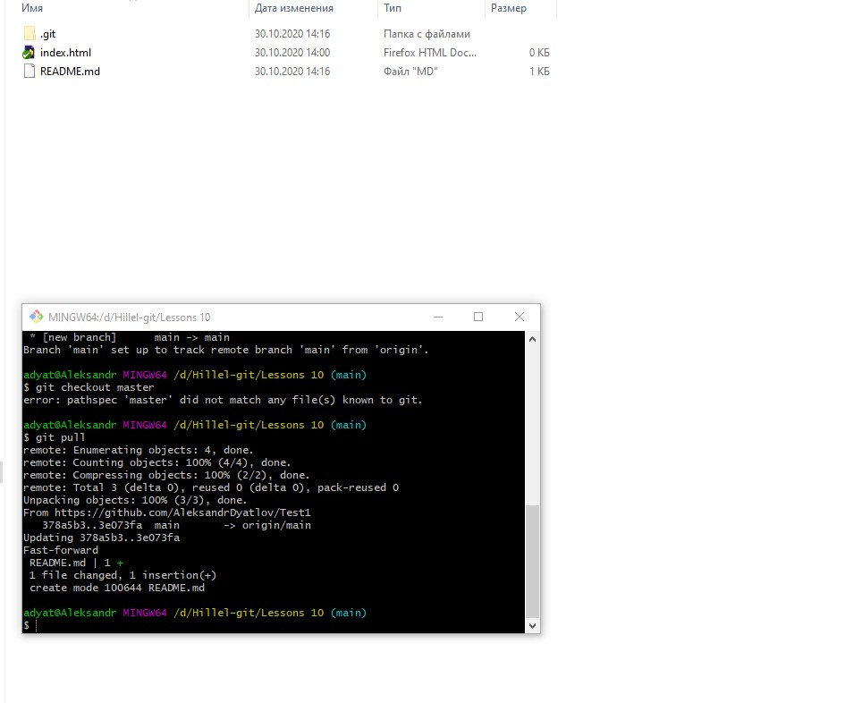

Lesson 14 (Git)
Git
Устанавливаем git Скачать git
Регистрируемся на github
Создаем новый репозиторий

-
git init
-
Добавляем файл, проверяем состояние файлов
git status -
Говорим git следи за этим файлом
git add index.html -
Делаем слепок наших файлов
git commit -m "first commit"
-
Связываем наш локальный репозиторий с github
git remote add origin https://github.com/AleksandrDyatlov/Test1.git -
Заливаем репозиторий на github
git branch -M maingit push -u origin main -
Стягиваем изменения с github в свой локальный репозиторий

-
Изменяем наш файл

-
Смотрим что в second commit
-
Ссылка которую прикрепляем к ДЗ
-
Удалить репозиторий
-
git clone -
first init
Home work
0